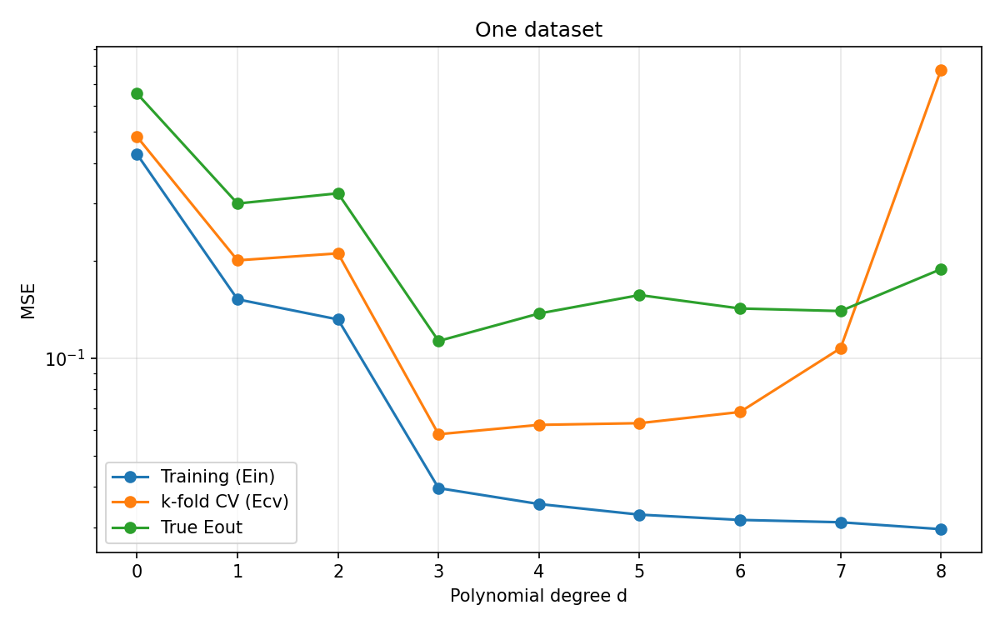
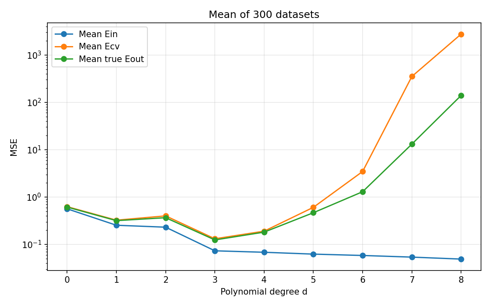
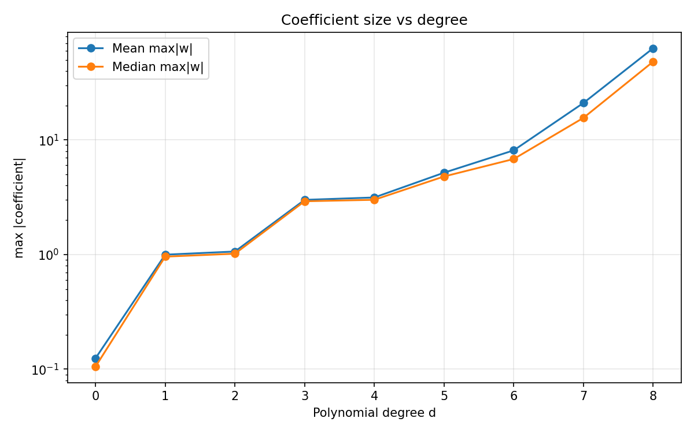
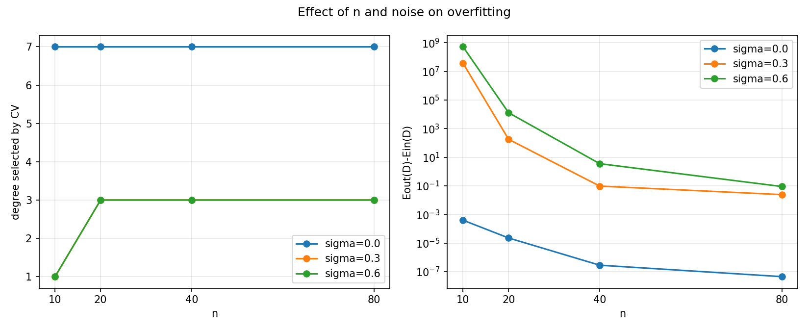

การเลือกดีกรีพหุนาม
และพฤติกรรม Overfitting
ศึกษาด้วยข้อมูลจำลอง เมื่อเป้าหมายคือ sin(πx) และเปรียบเทียบ Training error, k-fold CV และ True Eout
ไฟล์นี้ใช้กราฟจาก Assignment/Week5/plots/ และผลจาก results/ เท่านั้น ไม่รวมภาพคำนวณมือจาก visual_guides/
เราต้องการตอบอะไร?
คำถามหลัก
- ดีกรีสูงทำให้ Training error ลดลงเสมอหรือไม่?
- CV เลือกดีกรีเดียวกับ True Eout หรือไม่?
- เมื่อเพิ่ม n หรือ σ พฤติกรรมจะเปลี่ยนอย่างไร?
สัญญาณของ Overfitting
- Ein ต่ำมาก แต่ Ecv/Eout สูง
- กราฟแกว่งตาม noise มากกว่าตาม sin(πx)
- ค่าสัมประสิทธิ์ |w| โตผิดปกติ
กำหนดปัญหาและสร้างข้อมูล
Target function
สุ่มตัวแปร x จาก Uniform(−1,1) แล้วสร้างค่า y จากฟังก์ชันเป้าหมาย
Noisy observation
εᵢ ~ N(0, σ²)
เมื่อ σ = 0 จะเป็น noiseless และเมื่อ σ เพิ่ม จุดข้อมูลจะกระจายออกจากเส้นเป้าหมายมากขึ้น
10204080
0 ถึง 8
10-fold
10-fold CV แบ่งข้อมูลเป็น Train/Test อย่างไร?
แบ่งข้อมูลเป็น 10 ส่วนเท่า ๆ กัน ในแต่ละรอบใช้ 9 folds เป็น train และ 1 fold เป็น test แล้ววนจนครบ 10 รอบ ดังนั้นข้อมูลทุกจุดจะถูกใช้เป็น test exactly 1 ครั้ง
| จำนวนข้อมูล n | Train ต่อรอบ (9 folds) | Test ต่อรอบ (1 fold) | จำนวนรอบ |
|---|---|---|---|
| 10 | 9 | 1 | 10 |
| 20 | 18 | 2 | 10 |
| 40 | 36 | 4 | 10 |
| 80 | 72 | 8 | 10 |
พหุนามดีกรี d ในรูปเมทริกซ์
สำหรับข้อมูลหนึ่งจุด เวกเตอร์คุณลักษณะคือ
เมื่อนำทุกจุดมาเรียงเป็นแถว จะได้ Design matrix X ขนาด n × (d+1)
ตัวอย่าง d = 3
จึงต้องหา w ทั้งหมด 4 ค่า ได้แก่ w₀ ถึง w₃
สูตรที่ใช้คำนวณในโค้ดเหมือนการคำนวณมือ
- สร้าง X = [1, x, x², …, xᵈ] จากค่า x ทุกจุด
- คำนวณเมทริกซ์ XᵀX และเวกเตอร์ Xᵀy
- แก้ระบบสมการ (XᵀX)w = Xᵀy เพื่อหา w
- นำ w ไปคำนวณ ŷ ทุกจุด แล้วหาค่า MSE
ใน Week5/HW3.py
ฟังก์ชัน design(), fit(), predict() ทำตามลำดับนี้
การใช้ Week3–4
นำ sin_target, reference_data จาก Week3 และ gen_data จาก Week4 มาใช้ซ้ำ
ค่าคลาดเคลื่อน 3 แบบที่ต้องแยกให้ออก
Training / Ein
ฟิตและวัดบนข้อมูลชุดเดียวกัน จึงมีแนวโน้มลดลงเมื่อ d เพิ่ม
Cross-validation / Ecv
10 รอบ: รอบละ train 90% และ test 10%; แต่ละจุดถูกทำนายโดยโมเดลที่ไม่ได้ใช้จุดนั้นในการฟิต แล้วรวม squared error ของ test ทั้ง n จุด
True Eout
วัดกับ sin(πx) บนกริดละเอียด แล้วบวก noise variance ของ label
การทำให้ผลเปรียบเทียบได้
ข้อมูลจาก CSV
ใช้ไฟล์ใน sin experiment/ โดยตรง เพื่อให้เทียบกับผลที่กรอกมาจาก Weka ได้
Noiseless ใช้คอลัมน์ y ส่วน noisy ใช้คอลัมน์ noisy_y
Weka-like folds
ใช้ลำดับการสลับข้อมูลแบบ Java Random seed = 1 ก่อนแบ่ง 10 folds
ค่าจาก Weka ไม่ได้ถูก hard-code ในโค้ด แต่คำนวณใหม่จากสูตร
ผลจากข้อมูล Noiseless
ตารางนี้เป็น RMSE ที่คำนวณจาก CSV เพื่ออ่านเทียบกับตาราง Weka ได้ง่าย ส่วนไฟล์ results ยังเก็บ MSE ด้วย
ทำตารางนี้เพื่ออะไร?
ใช้ดูว่าการเพิ่ม n และ degree เปลี่ยนความผิดพลาดของโมเดลอย่างไรในกรณีที่ไม่มี noise
ได้อะไรจากตาราง?
ข้อมูลสะอาดทำให้ degree สูงฟิตได้ดี และเมื่อ n เพิ่ม ค่า CV เข้าใกล้ Training มากขึ้น
ผลจากข้อมูล Noisy
เมื่อมี noise ความแตกต่างระหว่าง degree 3 และ degree 8 เห็นได้ชัด โดยเฉพาะ n = 10
ทำตารางนี้เพื่ออะไร?
ใช้ตรวจว่าโมเดลกำลังเรียนรู้รูปแบบจริง หรือกำลังจำสัญญาณรบกวนในข้อมูล training
ได้อะไรจากตาราง?
ถ้า Training ต่ำมากแต่ CV สูงมาก แปลว่าเกิด overfitting โดยเฉพาะ noisy n = 10, d = 8
n = 10, d = 8
Training RMSE = 0.0607
แต่ CV RMSE = 19.0424
n = 80, d = 3
Training RMSE = 0.2737
CV RMSE = 0.2910
ข้อมูลชุดเดียว: Training vs CV vs True Eout

กราฟนี้ทำเพื่ออะไร?
ใช้เลือก degree สำหรับข้อมูลชุดหนึ่ง โดยดูว่าค่า Training, CV และ True Eout ต่ำสุดที่จุดใด
ดูอะไรจากกราฟ?
- เส้น Training ลดลงต่อเนื่อง และต่ำสุดที่ d = 8
- เส้น CV ลดลงถึง d = 3 แล้วเพิ่มขึ้น
- True Eout ต่ำสุดที่ d = 3
- ดังนั้น CV เลือกดีกรีได้ตรงกับ Eout ในชุดนี้
Training → d = 8
CV → d = 3
True Eout → d = 3
ทำไม Training error เลือก d = 8 แต่ CV เลือก d = 3?
ช่วง d = 0 → 3
โมเดลเพิ่มความสามารถในการตามรูปทรงของ sin(πx) ทำให้ทั้ง Ein, Ecv และ Eout ลดลง
ช่วง d > 3
ความสามารถที่เพิ่มขึ้นเริ่มถูกใช้เพื่อจำ noise มากกว่ารูปแบบจริง ทำให้ Ein ยังลด แต่ Ecv/Eout เริ่มสูง
นี่คือเหตุผลที่ CV เป็นวิธีเลือก model complexity ที่เหมาะกว่า training error เพียงอย่างเดียว
ทำซ้ำ 300 ชุดข้อมูล: เส้นโค้งเฉลี่ย

กราฟนี้ทำเพื่ออะไร?
ลดผลจากความบังเอิญของ dataset เดียว เพื่อดูแนวโน้มทั่วไปของแต่ละ degree
ดูอะไรจากกราฟ?
- Mean Ein ลดต่อเนื่องจนถึง d = 8
- Mean Ecv ต่ำสุดประมาณ d = 3
- Mean Eout ต่ำสุดประมาณ d = 3
- หลัง d = 5 ความแปรปรวนทำให้ Ecv และ Eout สูงขึ้นอย่างรวดเร็ว
ค่าเฉลี่ยของ Ein, Ecv และ Eout ตามดีกรี
สิ่งที่ได้: d = 8 ให้ Mean Ein ต่ำสุด แต่ d = 3 ให้ Mean Ecv และ Mean Eout ต่ำสุด จึงเป็น degree ที่เหมาะกับการ generalize มากกว่า
เปรียบเทียบวิธีเลือกดีกรี
เลือกด้วย Training
เลือก d = 8 ถึง 100% ของ 300 datasets เพราะ Ein มักลดลงเมื่อเพิ่มพารามิเตอร์
เลือกด้วย CV
เป็นค่าที่มีความถี่เลือกสูงสุด 63.3% และเป็นจุดต่ำสุดของค่าเฉลี่ย Ecv
อ้างอิง True Eout
เป็นจุดต่ำสุดของค่าเฉลี่ย Eout และสอดคล้องกับ CV
ขนาดสัมประสิทธิ์สูงสุด |w| กับ Overfitting

กราฟนี้ทำเพื่ออะไร?
ใช้ตรวจความเสถียรของโมเดลผ่านขนาดสัมประสิทธิ์ ไม่ดูแค่ค่า error อย่างเดียว
ดูอะไรจากกราฟ?
- d = 0–2: ค่าสัมประสิทธิ์มีขนาดเล็ก
- d = 3–4: เพิ่มขึ้น แต่ยังควบคุมได้
- d = 5–8: ขนาด |w| โตเร็ว โดยเฉพาะเมื่อมี noise
ตัวอย่างค่าสัมประสิทธิ์จาก n = 10
Noisy, d = 3
max|w| ≈ 2.78
โมเดลยังมีรูปทรงเรียบ
Noisy, d = 8
max|w| ≈ 67.42
ค่าสัมประสิทธิ์แกว่งและไวต่อ noise
เมื่อปรับจำนวนข้อมูลและระดับ noise

กราฟนี้ทำเพื่ออะไร?
ใช้ศึกษาว่า sample size และ noise level ส่งผลต่อ degree ที่เลือกและความรุนแรงของ overfitting อย่างไร
ดูอะไรจากกราฟ?
- σ = 0: CV มักเลือกดีกรีสูงได้ เพราะข้อมูลสะอาด
- σ = 0.3 หรือ 0.6 และ n = 10: CV ลดดีกรีลงมาก
- เพิ่ม n: gap ของ d = 8 ลดลง เพราะข้อมูลช่วยควบคุมโมเดล
- เพิ่ม σ: gap และขนาดสัมประสิทธิ์พุ่งสูงขึ้น
ตารางสรุปผลของ n และ σ
ตัวแปรข้อมูล
n = จำนวนตัวอย่างในชุดข้อมูล
σ = ส่วนเบี่ยงเบนมาตรฐานของ noise ใน
y = sin(πx) + ε
ดีกรีที่เลือก
best Ein = degree ที่ทำให้ค่าเฉลี่ย Training MSE ต่ำสุด
best CV = degree ที่ทำให้ค่าเฉลี่ย 10-fold CV MSE ต่ำสุด
best Eout = degree ที่ทำให้ค่าเฉลี่ย True Eout ต่ำสุด
ตัวชี้วัด Overfitting
gap@D = Eout(D) − Ein(D)
ในงานนี้ D = 8
median max|w|@D = มัธยฐานของค่าสัมประสิทธิ์ที่มีขนาดมากที่สุดของ degree 8
การตีความ: gap@D ยิ่งมาก หมายถึง degree 8 ทำคะแนนบน train ดี แต่ทำนายข้อมูลใหม่แย่กว่าเดิมมาก จึงมี overfitting รุนแรง ส่วน median max|w|@D ยิ่งมาก แสดงว่าเส้น polynomial มีความไม่เสถียรและไวต่อ noise มากขึ้น
เรื่องเดียวกันมองผ่าน Bias–Variance ได้อย่างไร?
d ต่ำเกินไป
Underfitting
โมเดลยืดหยุ่นไม่พอ จับรูป sin(πx) ได้ไม่ดี → bias สูง
d พอดี
Good generalization
ตามรูปทรงจริงได้ และไม่ขยาย noise → CV/Eout ต่ำ
d สูงเกินไป
Overfitting
variance สูง, |w| โต, training ต่ำ แต่ข้อมูลใหม่แย่
การเพิ่ม degree ลด bias ในช่วงแรก แต่หลังจากจุดเหมาะสม variance จะเพิ่มเร็วกว่าประโยชน์ที่ได้
สรุปผล
ผลหลัก
- Training error ไม่เหมาะใช้เลือก degree เพียงอย่างเดียว
- CV เลือก d = 3 ซึ่งตรงกับ minimum ของ mean True Eout
- degree 8 แสดง overfitting ชัดเจนเมื่อมี noise และ n น้อย
ผลจาก n และ σ
- เพิ่ม n ช่วยลดความผันผวนของสัมประสิทธิ์
- เพิ่ม σ ทำให้ high-degree model ไม่เสถียร
- max|w| เป็นสัญญาณประกอบของ overfitting